1 二维随机变量
1.1 二维随机变量的分布函数
设 E 是一个随机试验， 它的样本空间是S={e}，设X=X(e),Y=Y(e)是定义在 S 上的随机变量，由它们构成的一个二维向量（X，Y）叫做二维随机变量或二维随机向量。
定义1：设(X,Y)是二维随机变量,对于任意实数x和y，二元函数F(x,y)=P{(X≤x)∩(Y≤y)}=P{X≤x,Y≤y}称为二维随机变量（X，Y）的分布函数，或者称为随机变量X和Y的联合分布函数。
1.1.1 分布函数的函数值的几何解释
将二维随机变量（X，Y）看成是平面上随机点的坐标, 那么, 分布函数F(x, y)在点(x, y)处的函数值就是随机点（X，Y）落在下面左图所示的, 以点(x, y)为顶点而位于该点左下方的无穷矩形域内的概率。
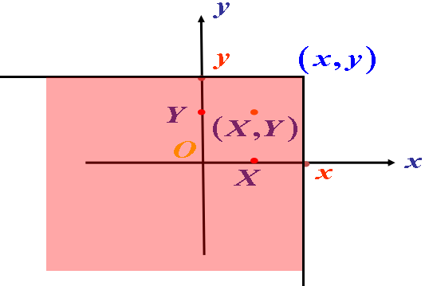
随机点(X,Y)落在矩形域x1<x≤x2,y1<y≤y2内的概率为：
P(x1<X≤x2,y1<Y≤y2)=F(x2,y2)−F(x1,y2)−F(x2,y1)+F(x1,y1)
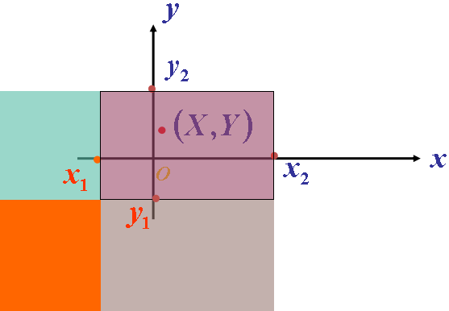
1.1.2 分布函数F(x, y)的性质
（1） F(x, y) 是关于变量 x 和 y 的不减函数；
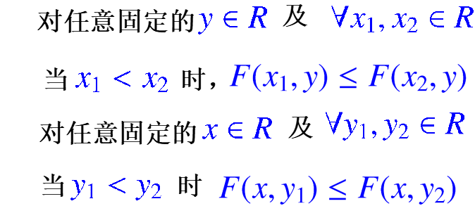
（2）0≤F(x,y)≤1且
- 对任意固定的y∈R,F(−∞,y)=0
- 对任意固定的x∈R,F(x,−∞)=0
- F(−∞,−∞)=0,F(+∞,+∞)=1
（3）F(x, y)关于x, y是右连续的。
- F(x,y)=F(x+0,y)
- F(x,y)=F(x,y+0)
1.2 二维离散型随机变量
定义2：如果二维随机变量(X,Y)全部可能取到的不相同的值是有限对或可列无限多对，则称(X,Y)是离散型随机变量。
定义3：二维离散型随机变量(X,Y)的分布律，或随机变量X和Y 的联合分布律定义为：
P{X=xi,Y=yj}=pij,i,j=1,2,…
其中，(xi,yj)为(X,Y)可能取的值。
也可用表格来表示随机变量X和Y 的联合分布律.
- 二维离散型随机变量(X,Y)的分布律具有性质：
{pij≥0,i,j=1,2,⋯∑i∑jpij=1
- 二维离散型随机变量(X,Y)的分布函数为:
F(x,y)=xi≤x∑yj≤y∑pij
例2 一个袋中有三个球, 依次标有数字 1, 2, 2,从中任取一个, 不放回袋中, 再任取一个, 设每次取球时, 各球被取到的可能性相等, 以 X, Y 分别记第一次和第二次取到的球上标有的数字,求 ( X, Y ) 的分布律与分布函数.
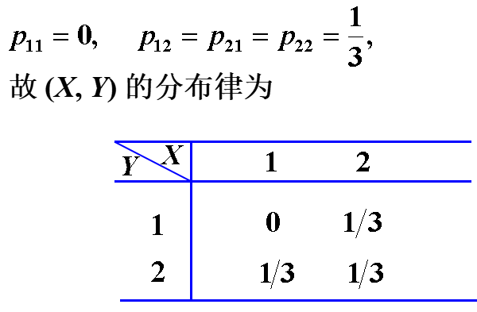
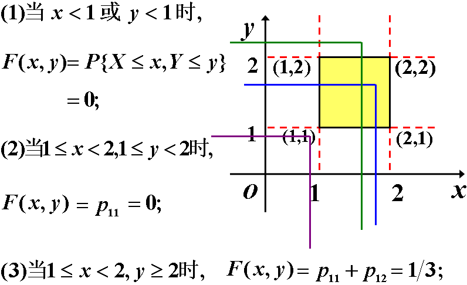
所以( X ,Y ) 的分布函数为：
F(x,y)=⎩⎪⎪⎪⎪⎪⎨⎪⎪⎪⎪⎪⎧0,31,1,x<1, 或 y<1, 或 1≤x<2,1≤y<21≤x<2,y>2, 或 x>2,1≤y<2x≥2,y≥2
1.3 二维连续型随机变量
定义4：对于二维随机变量(X,Y)的分布函数F(X,Y) ，如果存在非负可积的函数 f(x,y),使对于任意 x, y 有
F(x,y)=∫−∞y∫−∞xf(u,v)du dv
则称(X,Y)是连续型的二维随机变量,函数 f(x,y) 称为二维随机变量(X,Y)的概率密度, 或称为随机变量 X 和 Y 的联合概率密度。
说明：
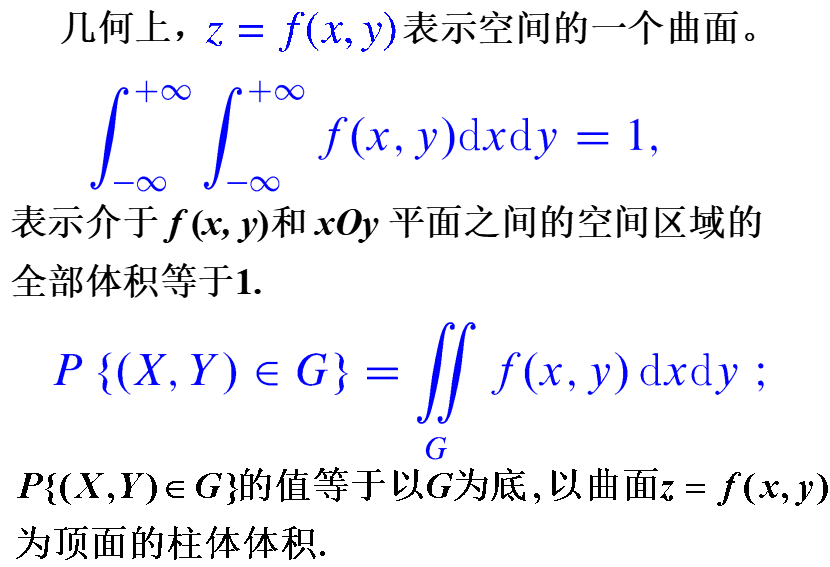
1.4 小结
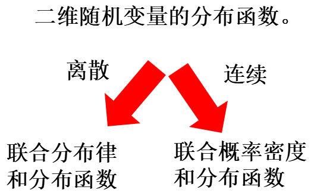
2 边缘分布
2.1 边缘分布函数
二维随机变量 (X,Y)作为一个整体，具有分布函数F(x,y)，而X和Y都是随机变量，也有各自的分布函数，分别记为FX(x)和FY(y)，依次称为二维随机变量(X, Y)关于X和Y的边缘分布函数。
FX(x)=P{X≤x}=P{X≤x,Y<+∞}=F(x,+∞)FY(y)=P{Y≤y}=P{X<+∞,Y≤y}=F(+∞,y)
2.2 离散型随机变量的边缘分布律
二维随机变量 (X,Y) 关于X 的边缘分布律为：
P{X=xi}=j=1∑+∞P{X=xi,Y=yj}=j=1∑∞pij≜pi⋅(i=1,2,⋯)
(X,Y) 关于 Y 的边缘分布律为：
P{Y=yj}=i=1∑∞P{X=xi,Y=yj}=i=1∑∞pij≜p⋅j(j=1,2,⋯)
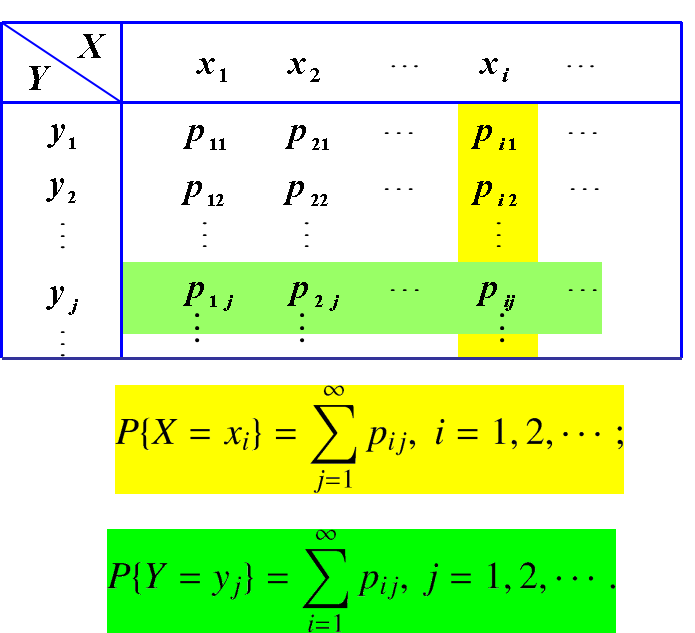
离散型随机变量关于X 和Y 的边缘分布函数分别为：
FX(x)=F(x,∞)=P{X≤x,Y<∞}=xi≤x∑j=1∑∞pij
FY(y)=F(∞,y)=P{X<∞,Y≤y}=yj≤y∑i=1∑∞pij
注意：已知两个变量的联合分布可以推导出每个变量的边缘分布，但是已知边缘分布不能推导出联合分布。
2.3 连续型随机变量的边缘分布
定义1：对于连续型随机变量(X, Y)，设它的概率密度为f(x, y)，由于
FX(x)=F(x,∞)=∫−∞x[∫−∞∞f(x,y)dy]dx
则fX(x)=∫−∞∞f(x,y)dy。 称为随机变量(X, Y)关于X的边缘概率密度。
Y 的边缘概率密度：fY(y)=∫−∞+∞f(x,y)dx
3 条件分布
3.1 离散型随机变量的条件分布
定义1 设 ( X, Y ) 是二维离散型随机变量，对于固定的 j，若 P{Y = yj } > 0，则称
P{X=xi∣Y=yj}=P{Y=yj}P{X=xi,Y=yj}=p∙jpiji=1,2,…
为在Y = yj 条件下随机变量X的条件分布律。
类似地，在X=xi的条件下随机变量Y的条件分布律为：
P{Y=yj∣X=xi}=P{X=xi}P{X=xi,Y=yj}=pi∙pij
3.2 连续型随机变量的条件分布
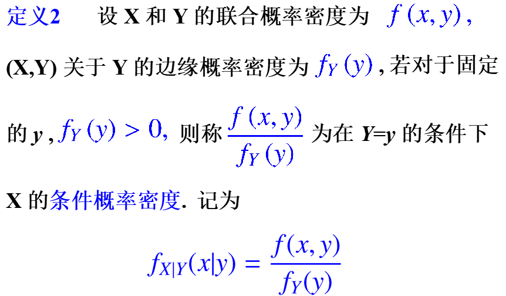
P{X≤x∣Y=y}=FX∣Y(x∣y)=∫−∞xfY(y)f(x,y)dx
为在Y=y的条件下, X的条件分布函数，类似地，可以定义：
fY∣X(y∣x)=fX(x)f(x,y)FY∣X(y∣x)=∫−∞yfX(x)f(x,y)dy
例3 设(X,Y)服从单位圆上的均匀分布，概率密度为f(x,y)={π1,0,x2+y2≤1 其它 ，求fY∣X(y∣x)
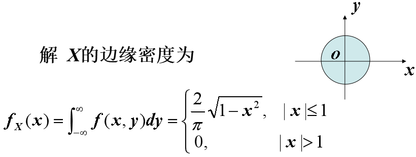
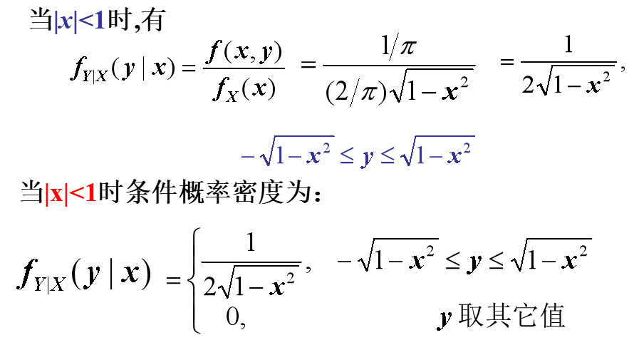
3.2.1 二维均匀分布
设G是平面上的有界区域，其面积为A. 若二维随机变量（ X, Y）具有概率密度
f(x,y)={A1,0,(x,y)∈G 其它
则称（X,Y）在G上服从均匀分布。
向平面上有界区域G上任投一质点，若质点落在G内任一小区域B的概率与小区域的面积成正比，而与B的形状及位置无关, 则质点的坐标 (X,Y)在G上服从均匀分布.
4 相互独立的随机变量
4.1 随机变量相互独立的定义
定义1：设 X,Y是两个随机变量，若对任意的x, y, 有P{X≤x,Y≤y}=P{X≤x}P{Y≤y}，则称 X 和 Y 相互独立。
用分布函数表示，设 X,Y是两个随机变量，若对任意的x, y, 有F(x,y)=FX(x)FY(y)，则称X和Y相互独立。
4.1.1 结论
（1）若 (X,Y)是连续型机变量，则上述独立性的定义等价于，对任意的 x, y, 有f(x,y)=fX(x)fY(y)，几乎处处成立，则称 X 和 Y 相互独立 .
这里“几乎处处成立”的含义是：在平面上除去面积为 0 的集合外，处处成立.
（2）若 (X,Y)是离散型机变量，则上述独立性的定义等价于，对(X,Y)的所有可能取值(xi, yj),有
P{X=xi,Y=yj}=P{X=xi}P{Y=yj}
则称 X 和Y 相互独立.
（3）X和Y相互独立，则f(x)和g(y)也相互独立。
5 两个随机变量的函数的分布
5.1 Z=X+Y的分布
5.1.1 离散型
若 X、Y 独立，P(X=k)=ak, P(Y=k)=bk, k=0,1,2,…, 则Z=X+Y 的分布律为
例1若X和Y相互独立,它们分别服从参数为λ1,λ2的泊松分布,则Z=X+Y服从参数为λ1+λ2的泊松分布.
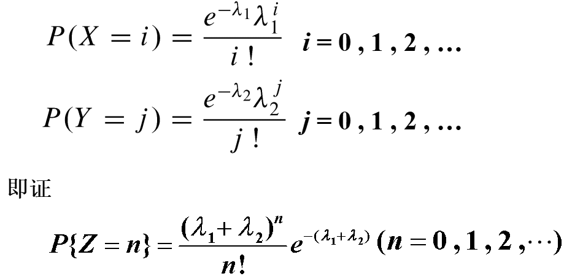
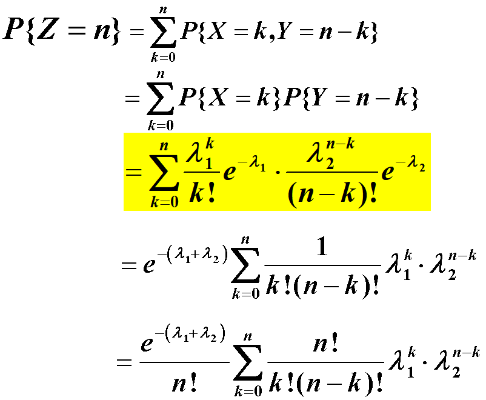
5.1.2 连续型
设X和Y的联合密度为 f (x, y), 则 Z=X+Y 的概率密度函数为
fZ(z)=fX+Y(z)=∫−∞∞f(z−y,y)dy=∫−∞∞f(x,z−x)dx
以上两式即是两个随机变量和的概率密度的一般公式.
特别地，当 X 和 Y 独立，设 (X,Y) 关于 X, Y 的边缘密度分别为 fX(x) , fY(y) , 则：
{fZ(z)=∫−∞∞fX(z−y)fY(y)dyfZ(z)=∫−∞∞fX(x)fY(z−x)dx
上式称为fX,fY卷积公式,记为fX∗fY。
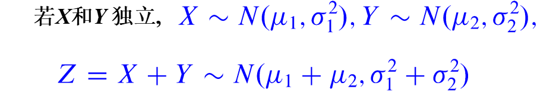
有限个独立正态变量的线性组合仍然服从正态分布， 即若Xi∼N(μi,σi2),i=1,2,⋯,n相互独立,则
i=1∑nkiXi∼N(i=1∑nkiμi,i=1∑nki2σi2)
5.2 Z=Y/X, Z=XY的分布
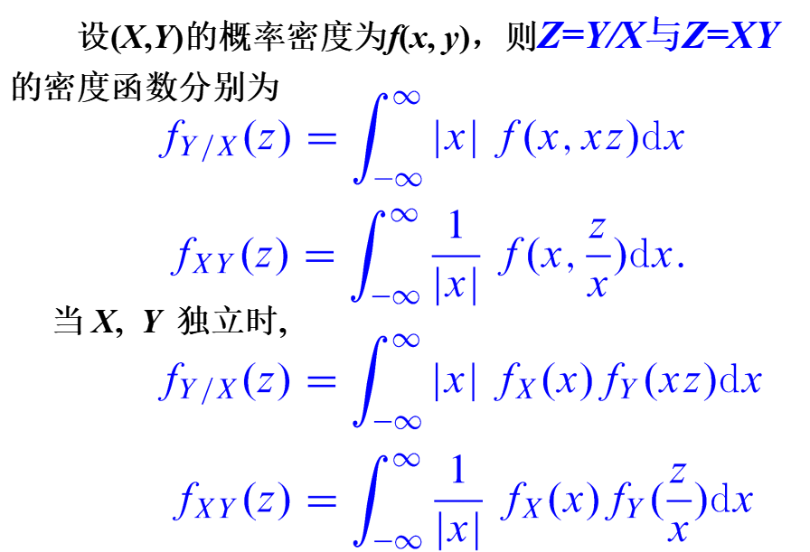
5.3 M=max(X,Y)的分布
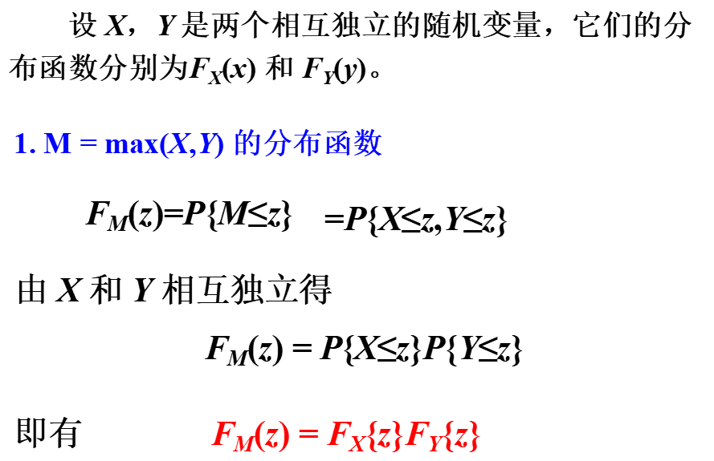
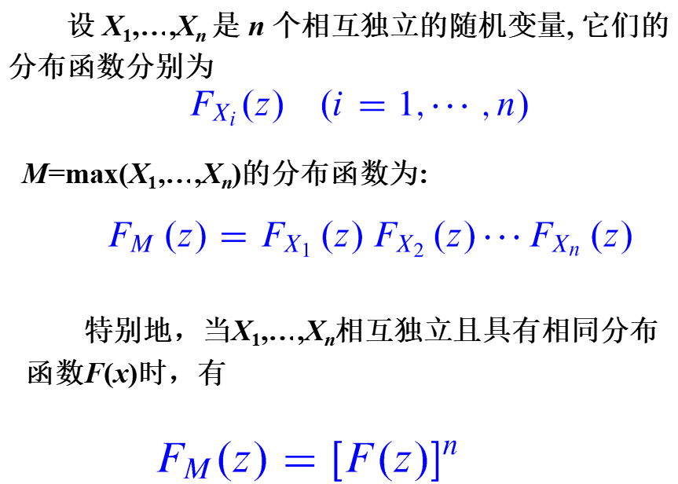
5.4 N=min(X,Y) 的分布
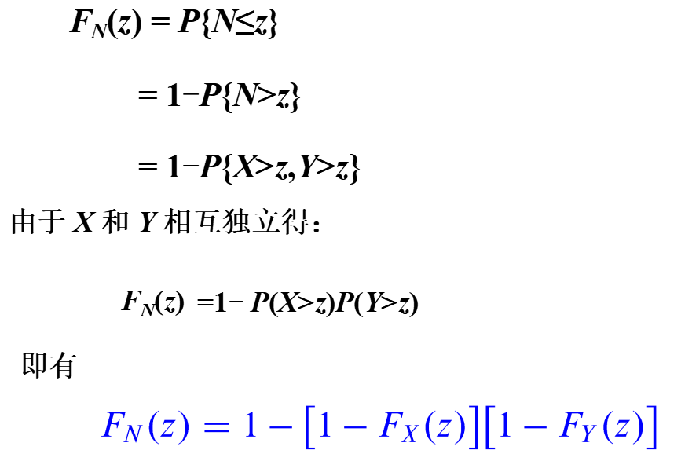
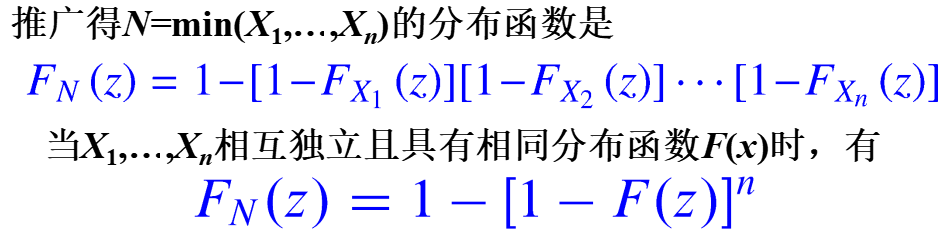
6 本章总结
-
二维随机变量的分布、分布律、概率密度；
-
边缘分布（离散型、连续型）；
-
条件分布（离散型、连续型）；
-
两个随机变量相互独立得出的4个公式；
-
两个随机变量的函数的分布（5种函数）；

 微信
微信 支付宝
支付宝